Every ship is a wave buoy… if you know how to read it!
Presentation to DS/S-262 committee
Technical University of Denmark (DTU)
Section of Fluid Mechanics, Coastal and Maritime Engineering
Department of Civil and Mechanical Engineering
Kgs. Lyngby, Denmark
Introduction Who am I?
My research field: The estimation of metocean variables based on response measurements on board floating vessels.
2016–2020
Engineering degree
École Centrale de Lyon
(FR) 2018–2020
MSc in Mechanical Engineering
DTU (DK) 2020–2023
Double PhD
DTU (DK) & NTNU (NO) 2024–now
Postdoc, DTU
Co-PI of WEFOSWAB (2024–2027): “Wave estimation and forecasting using ships as wave buoys” May 2026
Member of DS/S-262
Awards: Best Paper Presented by a Young Researcher, IEEE MetroSea 2024 · Maenosono award 2026 (Japan)
Coordinator of: LY300 course on ship hydrostatics and stability (DTU)
Main partners from academia and industry: Kobe University (JP), University of Exeter (UK), Met Office (UK), Oshen (UK), Maersk (DK), DNV (NO), NTNU (NO), MOBILIS (FR).
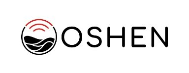
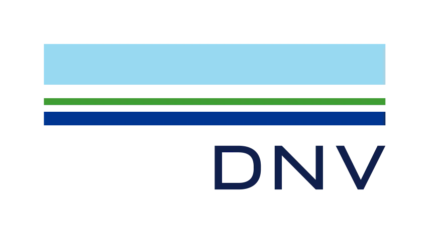
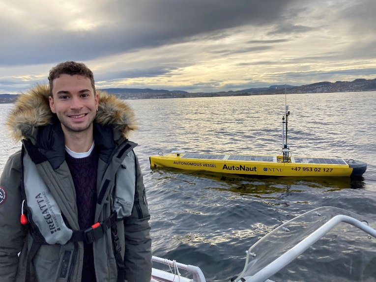
Introduction Four questions
1
Why do we need wave data?
2
How is it obtained today?
3
How can a ship act as a wave buoy?
4
What could this mean for standards?
Question 4 is for you!
Why wave data? Your insights
Why wave data? Waves drive cost, safety and structural life
Fuel and emissions
Added resistance in waves, weather routing, CII and EU ETS exposure.
Global shipping contributes by ~ 3% to worldwide anthropogenic emissions of greenhouse gases (IMO, 2020).
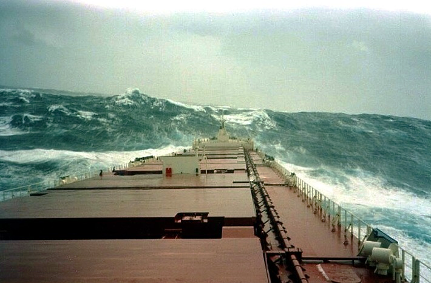
“Waves of Silence” by Joe Thomissen is licensed under CC BY-SA 2.0.
Safety
Parametric roll and container losses.
Over the past 10 years, an average of 1,274 containers have been lost at sea annually (IMO, 2025).
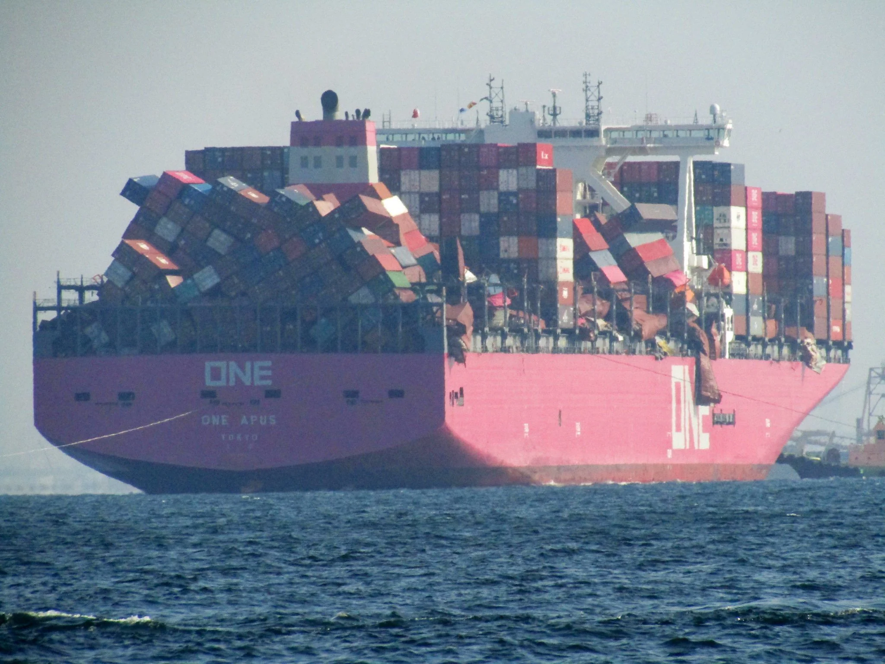
ONE Apus as it arrived in Kobe, Japan, December 8, 2020. Photo: Twitter @mrnkA4srnrA
Structure
Fatigue and hull girder loads.
Historical wave and response data need to be collected for design and (predictive) maintenance.
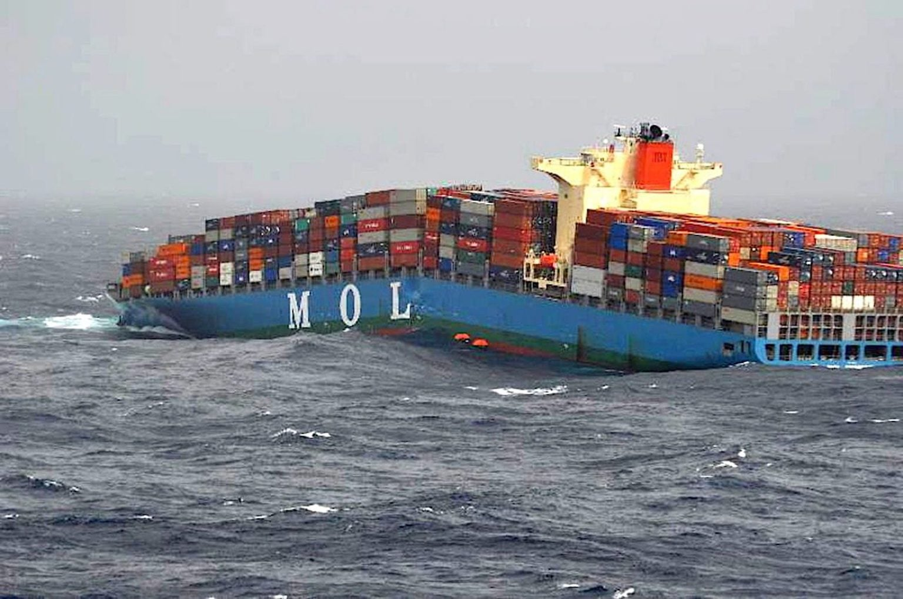
The MV MOL Comfort after structural failure on June 17, 2013 in the Indian Ocean
Why wave data? The observation gap
Scientific wave buoys

Map: NOAA National Data Buoy Center, retrieved 9 November 2026.
Ship traffic (AIS density)
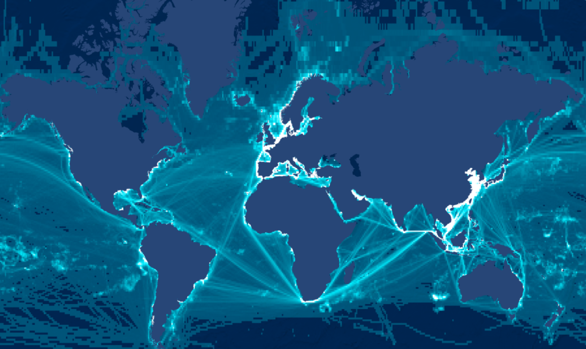
Map: Global Fishing Watch, vessel traffic, September 2026.
“[S]ampling is such a dull word. Nevertheless, the concept is of immense importance. Most of the previous century could be called a century of undersampling.” – Walter H. Munk, April 2002

How is it obtained today? How the sea state is estimated today
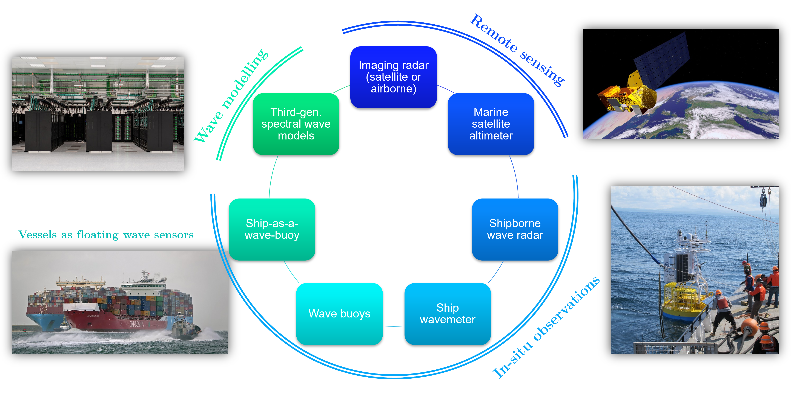
| Technology | Spatial coverage |
Time resolution |
Directional information |
Cost | Available at the ship's position |
|---|---|---|---|---|---|
| Wave models (ERA5, WAM) | 🙂 | 😐 | 🙂 | 🙁 | 😐 |
| Satellites (altimetry, SAR) | 😐 | 😐 | 🙁 | 🙁 | 🙁 |
| Buoys | 🙁 | 🙂 | 🙂 | 🙁 | 🙁 |
| Shipborne radar (e.g. WaMoS) | 🙁 | 🙂 | 🙂 | 🙁 | 🙂 |
| Ship as a wave buoy | 🙁 | 🙂 | 🙂 | 🙂 | 🙂 |
How is it obtained today? “Observed” waves are estimates too
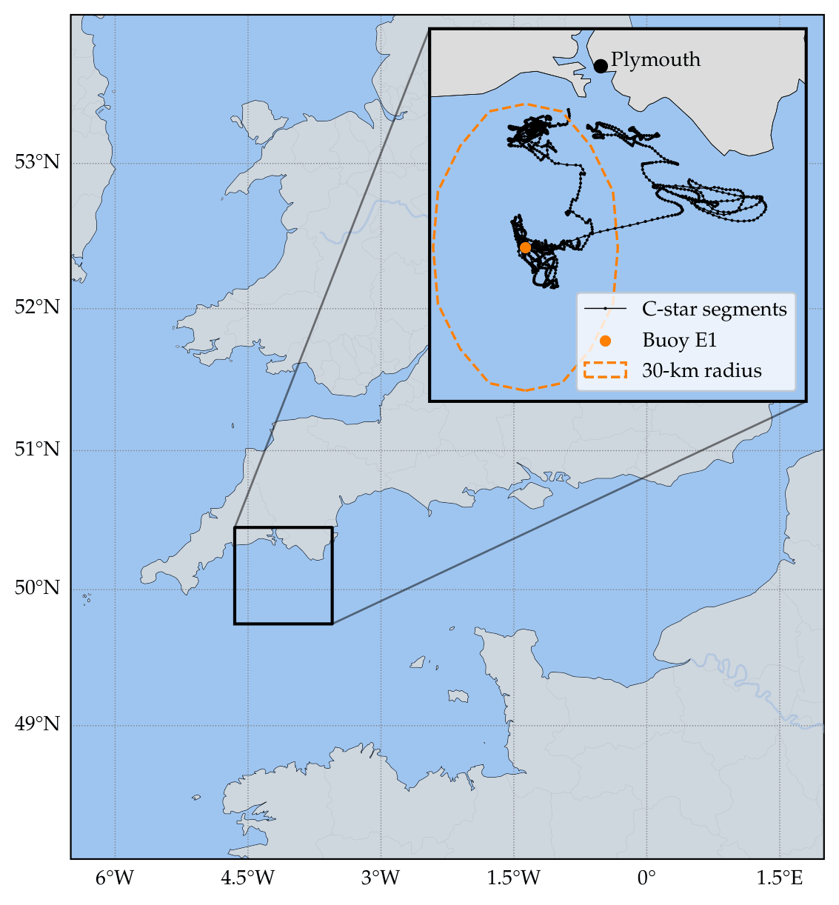
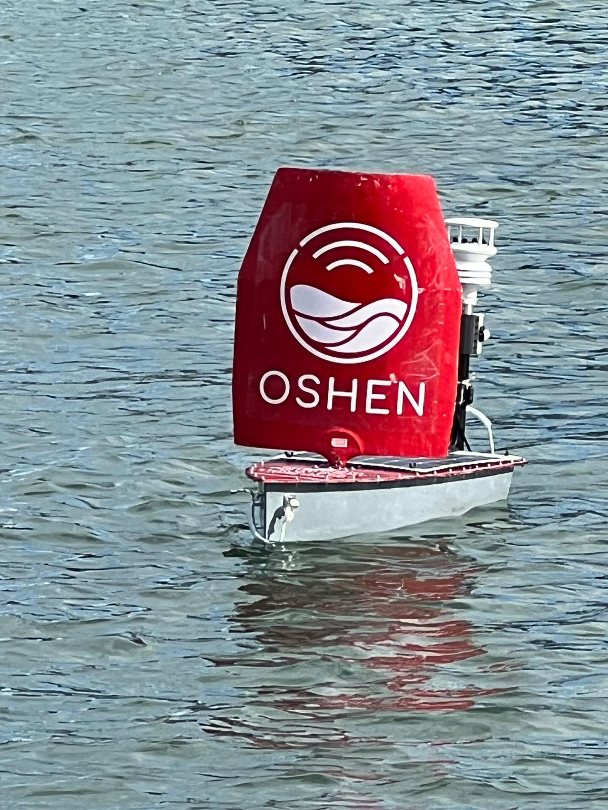
The Oshen C-Star autonomous surface vessel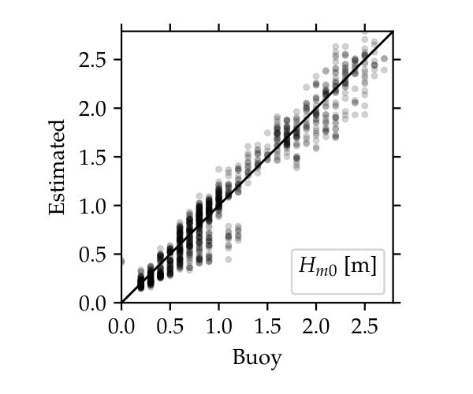
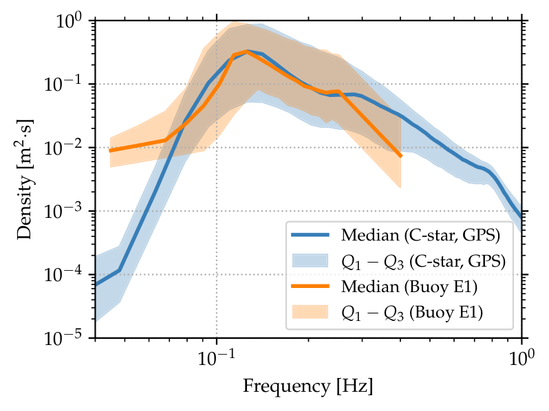
C-star track around buoy E1 off Plymouth (left); significant wave height \(H_{m0}\) estimated from the C-star versus measured by buoy E1 (middle); wave spectra from both platforms (right). From Mounet et al. (2026b), OMAE 2026. Sailing through the English Channel: whose wave heights would you trust, the buoy’s or the C-star’s?
How can a ship act as a wave buoy? A ship is a large, imperfect wave buoy
Nielsen et al. (2023)
Transfer functions (the “filter”)
or Machine learning
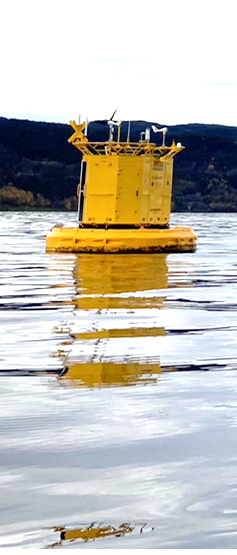
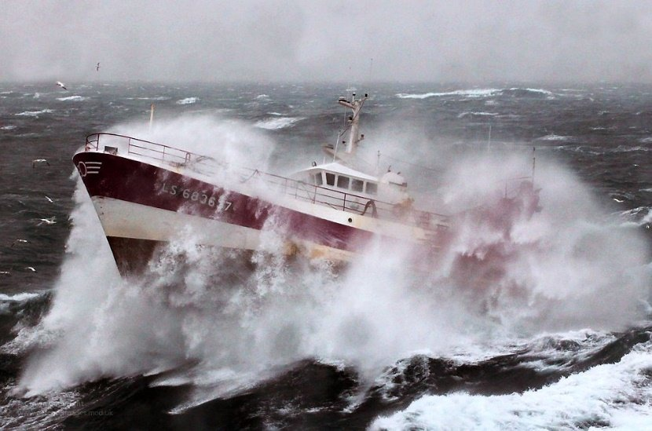
“French Fishing Vessel ‘Alf’ in the Irish Sea” by Defence Images is licensed under CC BY-SA 2.0.
Measured motions
Motion spectra
Directional wave spectrum
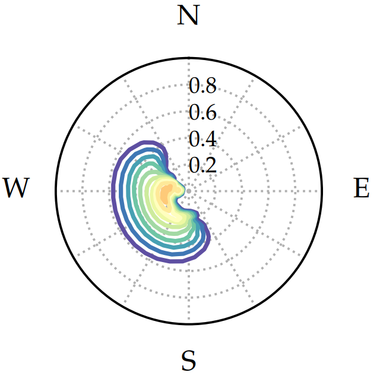
\(H_s\), \(T_p\), direction
How can a ship act as a wave buoy? Why ships are harder to “read” than buoys
Size
A large ship ignores short waves: its motions filter them out.
Forward speed
The Doppler shift distorts the wave frequencies that the ship encounters.
Uncertain filter
The loading condition and speed change the transfer functions.

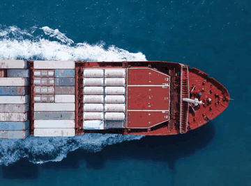

How can a ship act as a wave buoy? What is needed on board
- Inertial measurement unit (IMU) or motion reference unit (MRU)
- GPS
- Basic ship particulars and the loading condition
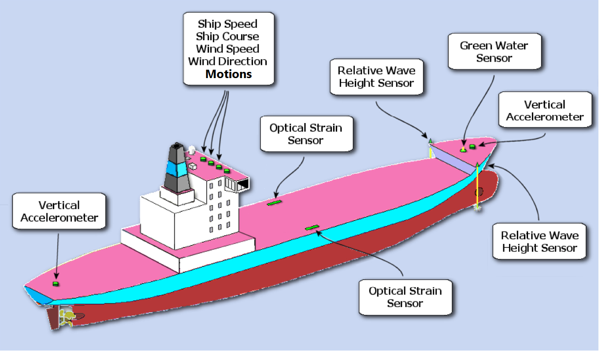
Illustration from Nielsen (2018), doctoral thesis.
Research outcomes 1. From single ships to wave maps
Coverage
Ships and buoys combined in a network give wave information where no sensor exists.
Mounet et al. (2023a), Deriving spatial wave data from a network of buoys and ships, Ocean Eng. 281.
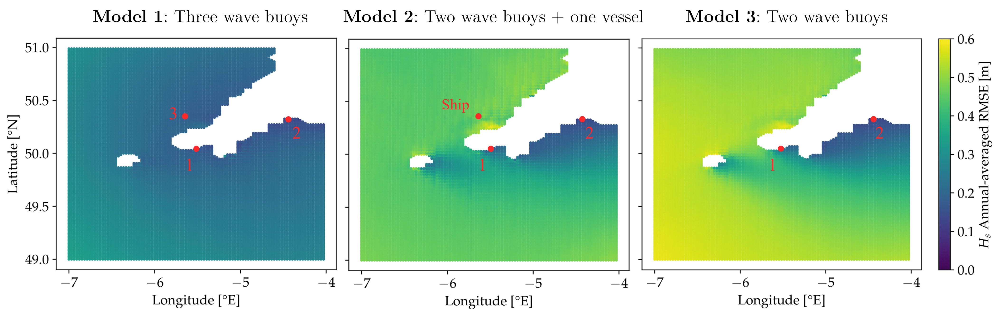
From Mounet et al. (2023a).
Research outcomes 2. Ships that calibrate themselves
Uncertain filter
The transfer functions can be learned from the ship’s own data, with confidence bands.
- Mounet et al. (2022): simultaneous sea state estimation and transfer function tuning, network of DP ships.
- Nielsen et al. (2022): parameterised transfer functions with confidence bands.
- Takami et al. (2026a): blind identification of incident waves and transfer functions.
… moreover, machine learning methods can estimate the sea state without any transfer functions (Nielsen et al., 2024a, 2024b).
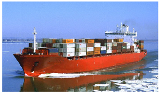
- GPS (position and speed)
- Motions: heave, roll and pitch accelerations
- Wave radar (Wavex by MIROS)
- About two years of data
- 25-min time series sampled at 5 Hz
- 5,261 open-water samples
- 80% for training, 20% for testing
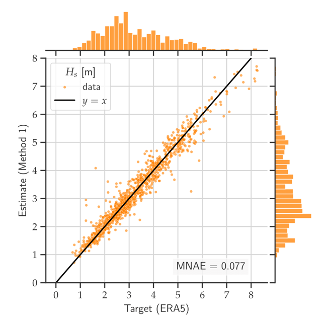
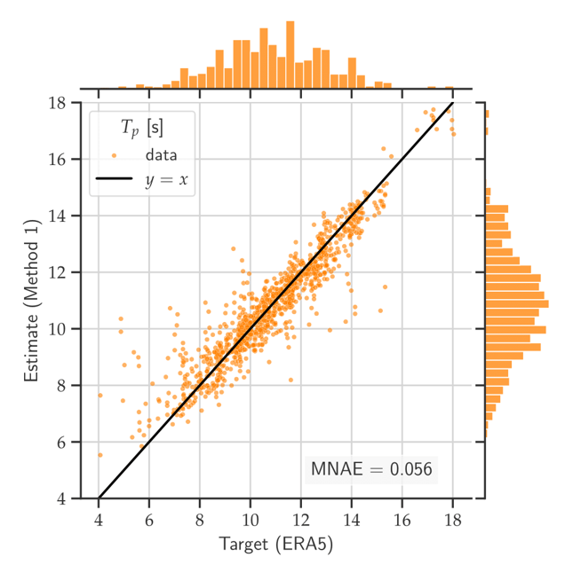
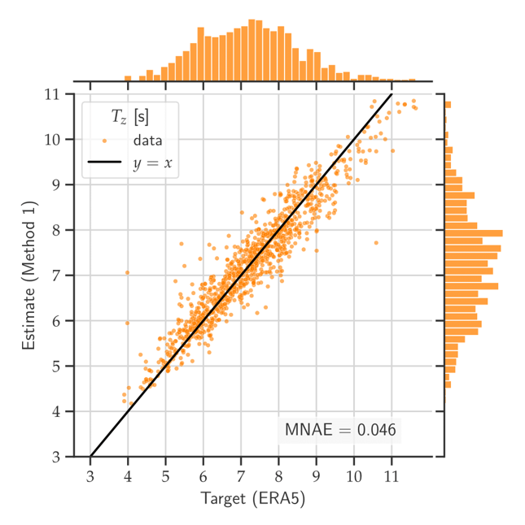
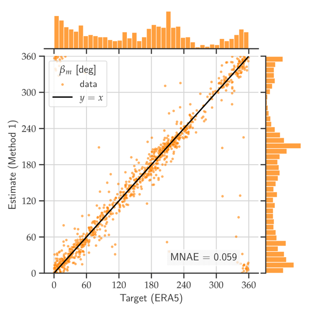
Research outcomes 3. Correcting for speed and shallow water
Forward speed
- Doppler shift for ships advancing at any forward speed, including following seas: Mounet et al. (2023b, 2025, 2026a).
- Effect of water depth on the Doppler shift and on spectral response calculations: Nielsen et al. (2026).
Research outcomes 4. A 1.4 m robot as a directional wave sensor
Size
- Field campaign with the Oshen C-star: Mounet et al. (2026b).
- Hydrodynamic model estimation for a USV: Mounet et al. (2024).
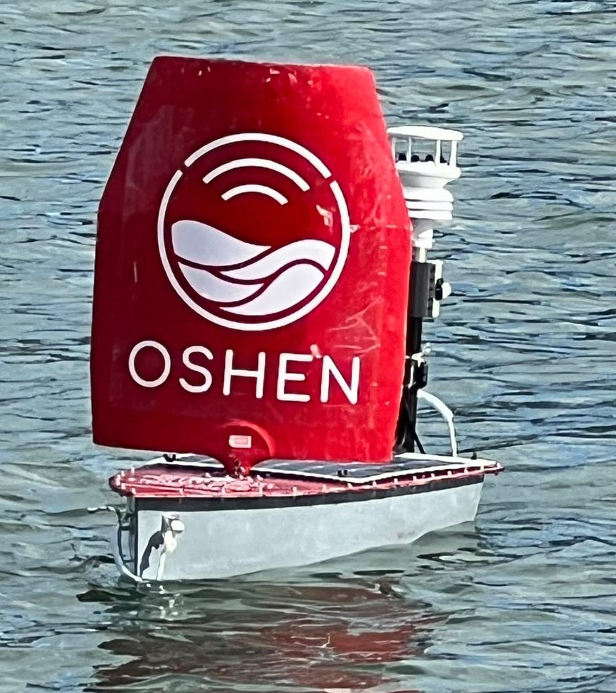
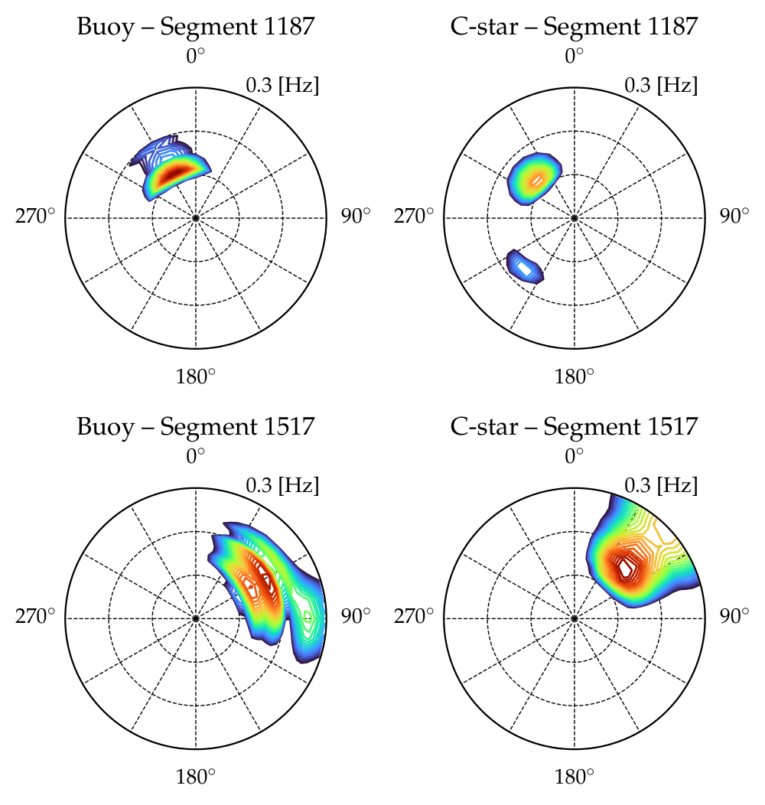
Vessel-as-a-buoy versus nearby buoy.
Research outcomes 5. The same data reveals the ship’s own condition
Beyond waves
- Hull girder structural integrity from wave-induced motions: Mekki et al. (2026), with DNV.
- Data-driven updating of ship roll-motion parameters: Takami et al. (2026b).
- Machine-learning-based wave estimates with uncertainty: Nielsen et al. (2024b).
Measured motions
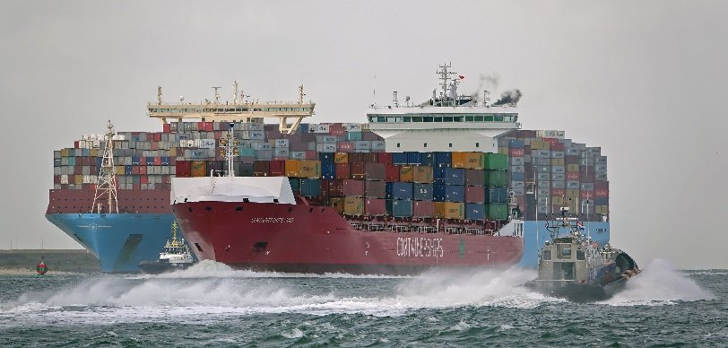
“MILAN MAERSK, MULTRATUG 33, CONTAINERSHIPS NORD & JEANINE PARQUI” by kees torn is licensed under CC BY-SA 2.0.
Waves (sea state)
Hull loads & stability
Surface currents?
Wind?
What could this mean for standards? NetSSE: an open reference implementation
Open-source Python package
- Analyse buoy data (
analys.buoy) - Analyse ship data, wave-buoy analogy (
analys.sawb,analys.emep) - Doppler correction (
analys.dsa) - Simulate waves and vessel responses (
simul.ship_resp) - Retrieve ERA5 data (
model.era5)
Documentation: https://netsse.readthedocs.io/
Source code: https://gitlab.gbar.dtu.dk/regmo/NetSSE
What could this mean for standards? Where wave data enter standards and rules
| Standard / guidance | What the wave input is used for |
|---|---|
| ISO 15016 | Speed trials: correction for waves |
| IMO MSC.1/Circ.1228 | Guidance to the master for avoiding dangerous situations in adverse weather and sea conditions |
| ISO 19030 | Hull and propeller performance |
| Second-generation intact stability criteria, operational measures | |
| IACS wave scatter data for design loads |
Question: does any standard specify how to estimate waves from onboard motions, or how good the estimate must be?
What could this mean for standards? Three questions for the committee
1. Should there be minimum metadata and sensor requirements (IMU position, sampling rate, loading condition) so that ship motion data becomes reusable?
2. How should the uncertainty of a wave estimate be reported and accepted, for example in performance monitoring or trials?
3. Who owns and shares the data, given commercial sensitivity versus the public benefit for forecasting?
Take-home messages
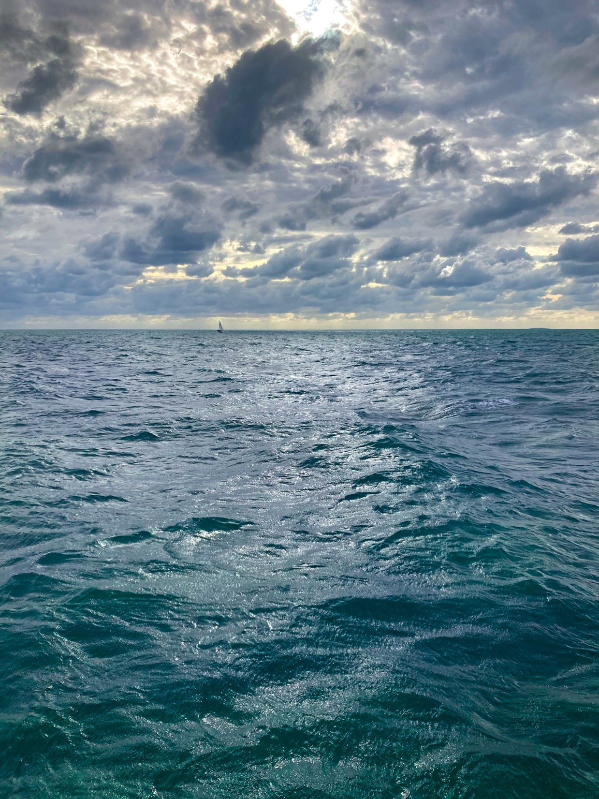
- Ships can fill the wave observation gap: they sail where buoys are absent, and networks of ships and buoys extend the coverage.
- The wave buoy analogy gives estimates in fair agreement with buoys and wave models, despite the ship’s size, forward speed and uncertain filter.
- Transfer functions require the loading condition and speed, but can be tuned from the ship’s own data.
- Machine learning needs no transfer functions and yields good sea-state parameters.
- The same motion data also reveal hull loads and stability.
- The methods exist and are open (NetSSE).
- Might standards be the missing piece?
References
IMO (2020). Fourth IMO Greenhouse Gas Study 2020. International Maritime Organization, London.
IMO (2025). Development of measures to prevent the loss of containers at sea: Estimate of containers lost at sea – 2025 update. Submitted by the World Shipping Council (WSC), 30 June 2025. International Maritime Organization, London.
Mekki, M., Nielsen, U.D., Mounet, R.E.G., Storhaug, G. (2026). Data-driven estimation of hull girder structural integrity using wave-induced motions. Mar. Struct. 108, 104036.
Mounet, R.E.G., Nielsen, U.D., Brodtkorb, A.H., Tannuri, E.A., de Mello, P.C. (2022). Simultaneous sea state estimation and transfer function tuning using a network of dynamically positioned ships. Appl. Ocean Res. 129, 103367.
Mounet, R.E.G., Chen, J., Nielsen, U.D., Brodtkorb, A.H., Pillai, A.C., Ashton, I.G.C., Steele, E.C.C. (2023a). Deriving spatial wave data from a network of buoys and ships. Ocean Eng. 281, 114892.
Mounet, R.E.G., Nielsen, U.D., Brodtkorb, A.H. (2023b). Doppler shift approximation for predicting the wave-induced response of advancing vessels in following waves. Proc. ASME OMAE 2023, Vol. 5, V005T06A053.
Mounet, R.E.G., Nielsen, U.D., Brodtkorb, A.H., Øveraas, H., Dallolio, A., Johansen, T.A. (2024). Data-driven method for hydrodynamic model estimation applied to an unmanned surface vehicle. Measurement 234, 114724.
Mounet, R.E.G., Nielsen, U.D., Takami, T. (2025). Doppler shift approximation in seakeeping problems: a new formulation for ships advancing at any forward speed. Proc. PRADS 2025.
Mounet, R.E.G., Nielsen, U.D., Takami, T. (2026a). Approximating the Doppler shift in sea-wave spectra observed from an advancing floating platform. Appl. Math. Model. 157, 116922.
Mounet, R.E.G., Nielsen, U.D., Pillai, A.C., Ashton, I.G.C., Holman, F., Laverack, A., Steele, E.C.C. (2026b). Inferring directional wave spectra via motion sensing on ocean-going autonomous surface vessels. Proc. ASME OMAE 2026.
Munk, W.H. (2002). Testimony to the U.S. Commission on Ocean Policy, San Pedro, California, 18 April 2002. https://govinfo.library.unt.edu/oceancommission/meetings/apr18_19_02/munk_statement.pdf
Nielsen, U.D. (2018). Sea state estimation based on measurements of wave-induced ship responses. Doctoral thesis, Technical University of Denmark (DTU).
Nielsen, U.D., Mounet, R.E.G., Brodtkorb, A.H. (2022). Parameterised transfer functions with associated confidence bands. Appl. Ocean Res. 125, 103250.
Nielsen, U.D., Bingham, H.B., Brodtkorb, A.H., Iseki, T., Jensen, J.J., Mittendorf, M., Mounet, R.E.G., Shao, Y., Storhaug, G., Sørensen, A.J., Takami, T. (2023). Estimating waves via measured ship responses. Sci. Rep. 13, 17342.
Nielsen, U.D., Iwase, K., Mounet, R.E.G. (2024a). Comparing machine learning-based sea state estimates by the wave buoy analogy. Appl. Ocean Res. 149, 104042.
Nielsen, U.D., Iwase, K., Mounet, R.E.G., Storhaug, G. (2024b). Uncertainty-associated directional wave spectrum estimation from wave-induced ship responses using machine learning methods. Ocean Eng. 313, 119543.
Nielsen, U.D., Mounet, R.E.G., Takami, T. (2026). Investigation of depth-effects on the Doppler shift and the consequence in spectral response calculations for ships. Ocean Eng. 351, 124298.
Storhaug, G., Moe, E., Piedras Lopes, T.A. (2007). Whipping measurements onboard a midsize container vessel operating in the North Atlantic. In: Int. Symp. on Ship Design and Construction. Marintec, RINA, CMP and SNAME.
Takami, T., Nielsen, U.D., Mounet, R.E.G., Jensen, J.J., Mori, R., Komoriyama, Y. (2026a). Blind identification of incident waves and response transfer functions of a marine vessel based on measured responses. Expert Syst. Appl. 296, 129236.
Takami, T., Nielsen, U.D., Mounet, R.E.G., Sasa, K. (2026b). A data-driven scheme for updating of parameters for ship roll motion. Ocean Eng. 356, 125346.

“This ship has sailed” by Vince Alongi is licensed under CC BY 2.0.
Thank you!
netsse.readthedocs.io
I am grateful for financial support by Orients Fond, Denmark and by Danmarks Frie Forskningsfond, Denmark.
Moreover, the support from the Japan Society of Naval Architects and Ocean Engineers (JASNAOE) collaborative research program is greatly acknowledged.
10 November 2026 Presentation to DS/S-262 committee